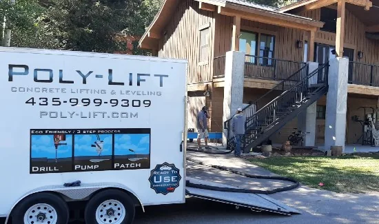
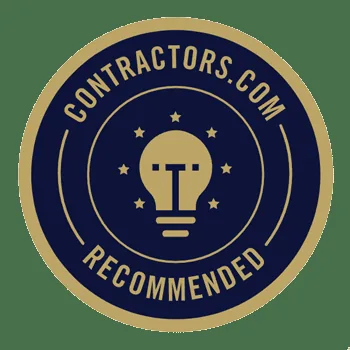

Dedicated Concrete Leveling and Lifting Company in St. George, UT
At Poly Lift Lifting and Piering, we understand that uneven concrete surfaces can pose significant safety risks, detract from the aesthetics of your property, and cause further structural damage if left unattended. George, UT, ensures precision and efficiency in every project.
Whether it's your driveway, patio, or basement floor, we bring our unwavering commitment to excellence to restore stability, safety, and aesthetic appeal to your property. Your satisfaction is our top priority, and we strive to exceed your expectations with our comprehensive, cost-effective, and durable concrete solutions. Trust Poly Lift Lifting and Piering for all your concrete leveling and lifting needs.
Why is Uneven Concrete a Problem?
It is unsafe to have raised concrete.
Deep Foamjection Solution
Don't let uneven or sinking concrete become a permanent fixture on your property. With Deep Foamjection, we directly address instability and erosion underneath your concrete structures.
Our environmentally friendly foam offers a long-lasting repair solution that minimizes disruption to your property and routine. Not only is it a superior choice for strength and stability, but it's also a testament to our commitment to eco-friendly practices.
Get Instant Results
We raise and level any type of concrete, including driveways, sidewalks, stairs, and more. Our Deep Foamjection method is half the cost of replacement, and your surface can be played on, driven on, or walked on immediately.
About St. George, UT
St. George, nestled in the southwestern corner of Utah's Washington County, is known for its warm weather and the rich, colorful, and captivating landscapes that adorn it. With its close proximity to the renowned Zion National Park and numerous local parks and trails, it's a haven for outdoor enthusiasts and nature lovers. The city also boasts a vibrant culture with a rich history, diverse arts scene, and a plethora of events and festivals throughout the year.
Despite these many attractions, property owners in St. George, face a common issue - uneven and sinking concrete. Here at Poly Lift Lifting and Piering, we are dedicated to helping the St. George community address this problem. Our innovative concrete leveling and lifting solutions have helped countless homeowners maintain the safety, aesthetics, and value of their properties.
From our jobs

